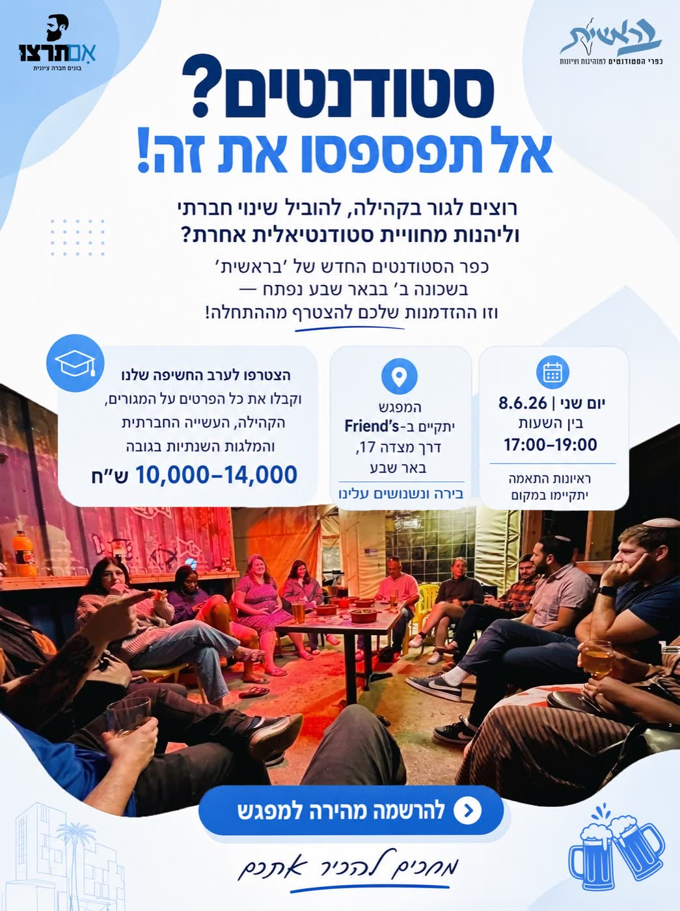
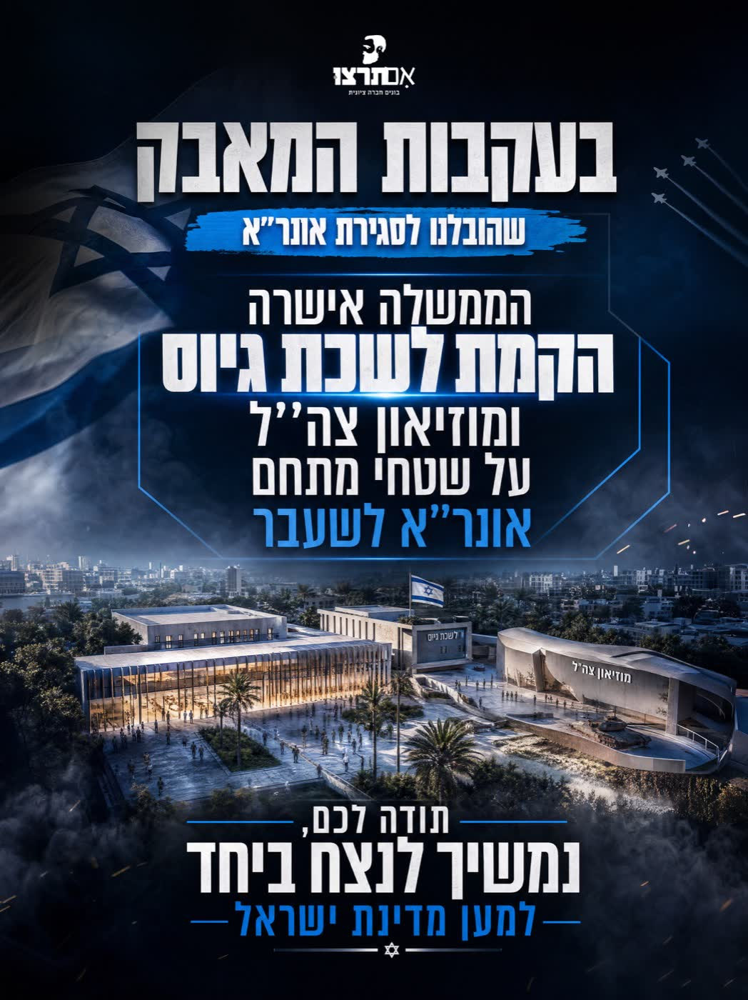
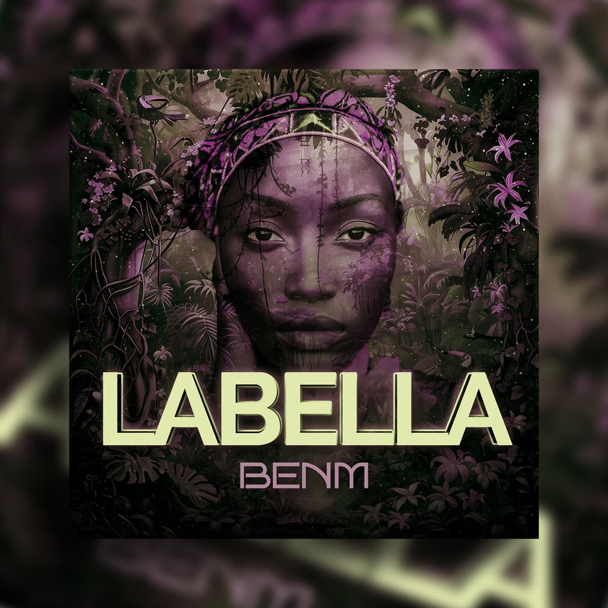
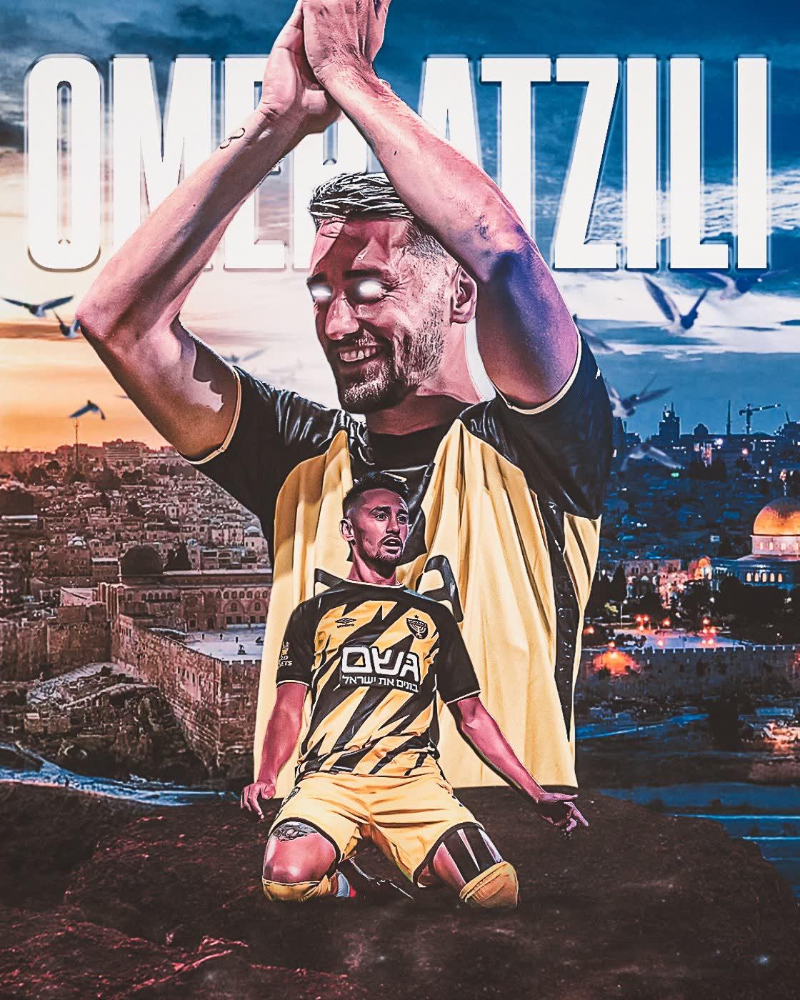
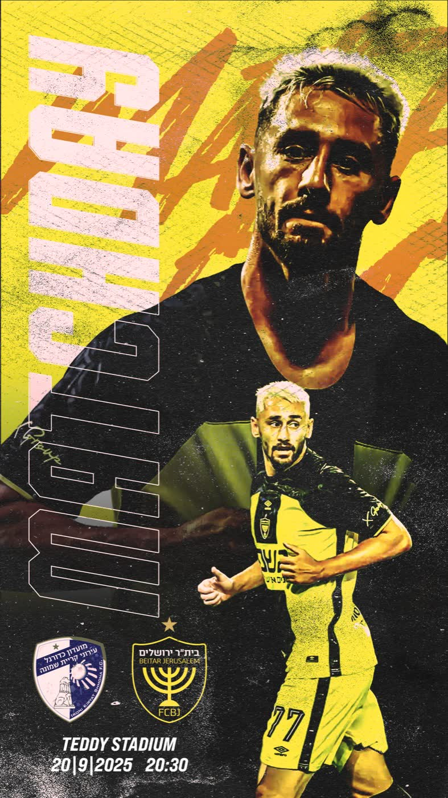
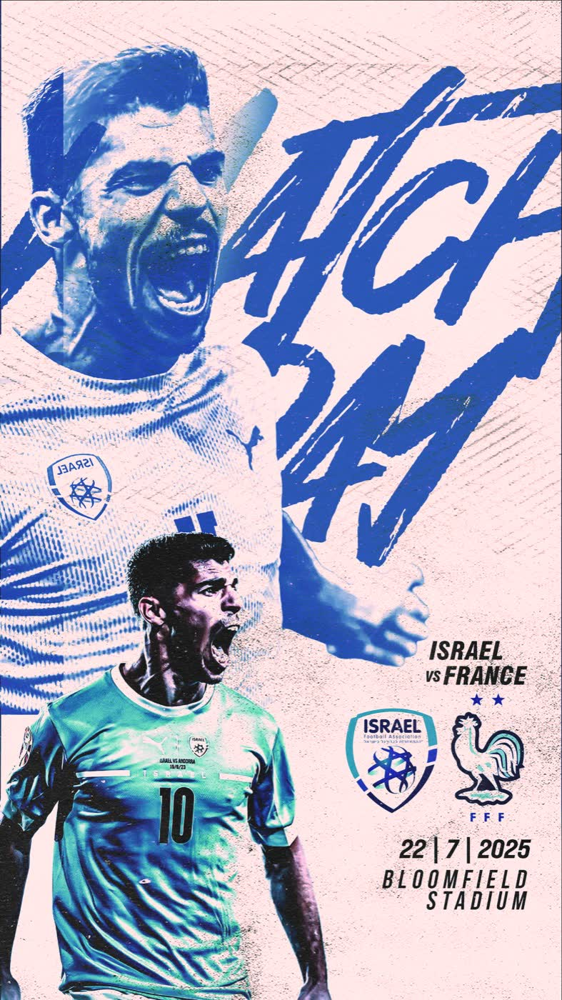
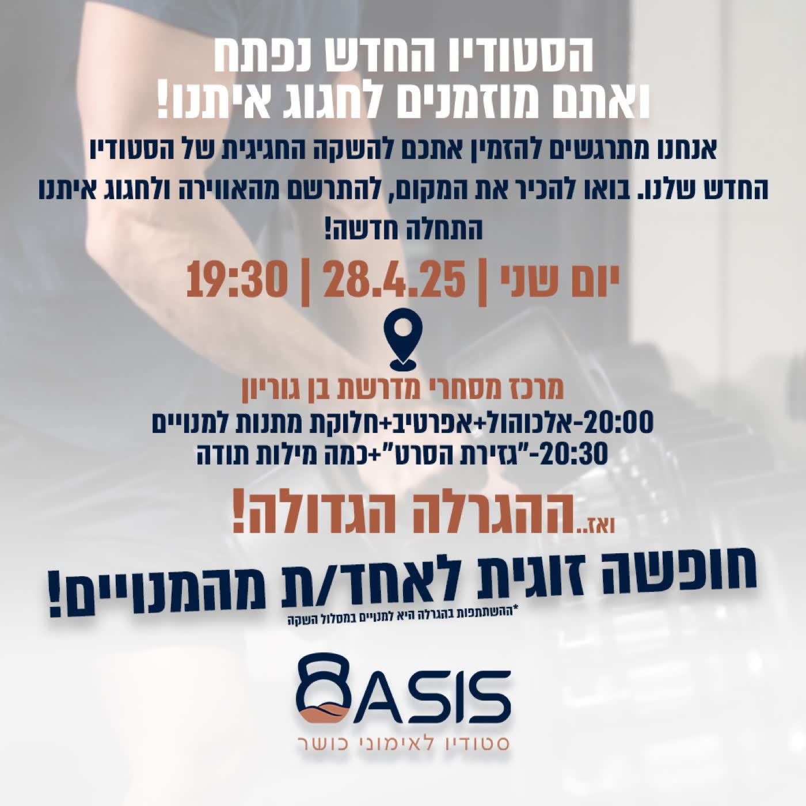

עבודה ללקוחאם תרצו — ערב סטודנטים
עבודה ללקוחאם תרצו — הודעה עבודה ללקוחאם תרצו — קמפיין תרומות
עבודה ללקוחאם תרצו — קמפיין תרומות עבודה ללקוחאם תרצו — סיור בכנסת
עבודה ללקוחאם תרצו — סיור בכנסתעבודה ללקוחאם תרצו — מינוי המוסד
 עבודה ללקוחעטיפת אלבום — AYEEYA
עבודה ללקוחעטיפת אלבום — AYEEYA
עבודה ללקוחעטיפת אלבום — LABELLA עבודה ללקוחספירה לאחור — אייל גולן
עבודה ללקוחספירה לאחור — אייל גולן קריאייטיבדן ביטון
קריאייטיבדן ביטון קריאייטיביהב שוע · בית״ר
קריאייטיביהב שוע · בית״ר
קריאייטיבעומר אצילי
קריאייטיבעומר אצילי · Matchday קריאייטיבדור פרץ · מכבי ת״א
קריאייטיבדור פרץ · מכבי ת״א
קריאייטיבמנור · נבחרת ישראל קריאייטיבמסי נגד רונאלדו
קריאייטיבמסי נגד רונאלדו פרסומתWIN — גלידה
פרסומתWIN — גלידה
פרסומתBasis — פתיחת סטודיו